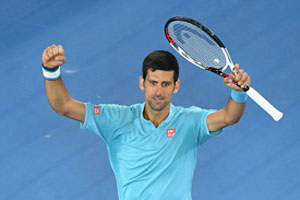
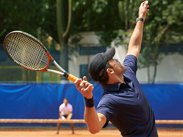
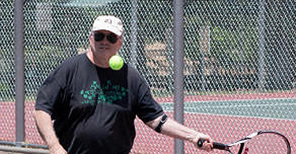
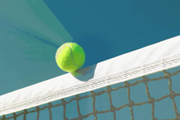
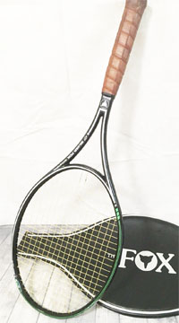

(start of section) | 🏠 Strategy Home | Next: Adapting Your Game to Win Matches
A Few Matches I Lost - and How
Comprehensive unified tennis knowledge base — Fundamentals, Stroke Analysis, Reference Library, and more
A Few Matches I Lost - and How
John Yandell

Winning 52% of your total points makes you number one.
In the last article (Click Here) I talked about how I adapted my game to win matches in NTRP and seniors tournaments. Although I was successful, won a couple of tournaments, and was ranked in several divisions in Norcal, there were plenty of players I couldn't or didn't beat, including a few that stood out as lost opportunities, and losses I tried to learn from.
These were all essentially mental and emotional breakdowns. I suspect many of our subscribers have had similar experiences.
Remember in a close match, the winner might win only a handful more total points. When he was number one in the world, Novak Djokovic led the tour by winning 52% of his points. So here are some examples of close matches I played that went the other way and why I think they did.
Richard
In my first year of playing NTRP tournaments, I got to the semi-final of a 4.5. The two guys in the other semi I knew and had actually beaten. I also had seen the guy I was playing and knew I could beat him.
The mistake was thinking ahead to winning my first NTRP tournament. Richard, my semi opponent was about 6 foot 5 inches and a former high school basketball player who took up tennis as an adult. His serve was pretty good but not great for his height. He served and volleyed but was awkward technically at the net. I knew that if I returned well, I would have a lot of chances for high percentage passes.

Richard had a good serve, but not a great serve.
I just had to get through this match and I would have a chance to win the whole tournament. And that thought was the wrong thought. The match unfolded pretty much as I thought it would. Time and time again I would hit solid returns and get a first volley back without much on it with the court open one way or the other.
I usually passed well on both sides. But in the early going, I choked pass after pass. According the theory of winning more total points, that shouldn't have been the end of the world.
But I got into a very negative frame of mind and started berating myself. I knew I would normally beat this guy, and here I was missing shots I normally make. My entire body felt like concrete. Now I was missing returns too. I saw the final and the trophy disappear in the distance.
I wasn't able to pull myself out of it and the guy won in two sets. I sat by the side of the court for about 45 minutes after the match.
It's a cliché but true that you have to play one ball at a time. I once saw Jimmy Connors say in a press conference that the ball doesn't know when it's set point. Later when I worked with Jim Loehr and he wrote "From Negative to Positive" for Tennisplayer, I understood better what had happened to me. (Click Here.)
Rusty
This was another 4.5 tournament in like the second round. Rusty was a big guy, overweight, a lefty, and a big, big talker. He had been a college player—he said. Basically, he started telling me how great he was from the moment we got the balls. And he continued his commentary through the match, noting my misses, his winners, and making excuses for every point he lost. Annoyingly, he would address me by name, "John this, John that." My mistake was listening to him.

Rusty's goal was to get enraged and play his best.
He had a great one-handed backhand that he hit early. I found that hitting my forehand crosscourt to it was not a winning pattern. He was absolutely railing backhands down the line. I finally figured out that getting around the ball and hitting inside out forehands to his lefty forehand gave me a chance in the points.
We got to five all in the third. And I missed an inside in forehand that probably would have been a winner. He said something like, "You really had me there, John, too bad you choked that one."
I'd been annoyed for over two hours, and finally I exploded. "Why don't you just shut the fuck up and just play tennis?"
To my surprise, that was just what he wanted to hear. The guy was one of these rare guys who played his best when enraged. This was why he had been baiting me.
All of a sudden, his game went up about a level. He ran off multiple forehand winners and won the last two games. Shaking hands with this smirking bastard was extremely unpleasant, but I did it and got out of there as fast as possible.
Andy
This one was another heart breaker—the semi-final in a men's Norcal 40 and over. The guy was good, and we were playing along to about 4-all in the first.
I hit an obvious let first serve, which he didn't call, but hit the return for an alleged winner. I didn't go for the ball and immediately called the let. All of a sudden, he was in my face telling me only the returner could call a let. That's not true in an unofficiated match.

Who calls a let in unoffiated matches?
He refused to play the point over and just went over to the other court, like he expected me to acknowledge it was his point and go over there and serve to him. I refused.
I knew the rule, so I was calm. I said, let's go get the tournament director and he can educate you on this. Well, the tournament director it so happened was playing in his own tournament. The person at the desk said he was unavailable.
So, I went over to his court and interrupted his match. He was very pissed. Worse, he didn't actually understand the rule and said it was Andy's point whether I went for the ball or not. Andy chimed in that I had tried to play his return and called the let after I missed the ball. That didn't help.
But I was still undeterred because I happened to have the rule book in my bag. I said something like you are mistaken, here is the rule and tried to hand him the book. He got angrier and said he was the tournament director, he knew the rule, didn't need to look at the book, and furthermore, I was breaking the rules by interrupting his match.
I said let's go call someone at the Northern California Tennis Association—they had some type of hotline for match disputes. The tournament director said if you don't go back to your court and finish your match right now, I will default you. Then he turned and went back to his match.
Andy said something like I told you so. That was too much.
I knew that one point is only one point. But I was so angry that no way I could get back to that type of thinking. I lost the match 4 and 1.
After the match I called the hotline and confirmed I was right. I also found out tournament directors are prohibited from playing in their own tournaments. I went back to find the tournament director but he had left. I wrote him a letter later, but he never responded.

A new racket and a loss of shot and emotional control.
Rico
In a first round 4.5 match, I was playing with a new racket, the Silver Fox, from a small company that made incredible graphite frames that were an extra inch long and perfectly balanced for me. I fell in love with it in practice, but this was my first tournament match trying it.
It had more power, which was something I felt I could use, but with some early match jitters, I was hitting long consistently. I tried hitting more topspin than I usually like to hit and that made things worse. I hit a few balls into the net trying to get the new range.
Rico was not a high-level opponent and I started worrying this match could really bring down my ranking. I got behind like 5-2 in the first and missed one more forehand. I said out loud something I usually say only to myself, "Hit the fucking ball in the court." For emphasis I slammed the racket down and cracked it.
Suddenly out of nowhere I hear: "Penalty point, racket abuse plus audible obscenity." I turned around and there was my very least favorite Norcal official, who was apparently serving as a roving judge. He had his arms crossed and was looking very stern.
I'd seen him around for years. Sorry, most officials are fine, but observing him you could see how important this power made him feel. Being anti-establishment, I started thinking about how this official was a petty tyrant, blah blah.
And now he's camped out on my match, arms folded, not going anywhere and staring at me. I may have said something like, "You really do enjoy your job, don't you?" He said something like "If you say one more word I will default you." Somehow his thick German accent made it all worse.
You can guess the outcome. I felt like Woody Allen in the movie scene with the LA motorcycle cop who pulls him over after he smashes into a few cars and when the cop asks him for his license, Woody tears it up in his face and says something like, "Sorry I have problems with authority."
One more lesson about trying to stay in the moment in the face of unexpected unpleasant events. I should have remembered my own tractor story.

John Yandell is widely acknowledged as one of the leading videographers and students of the modern game of professional tennis. His high speed filming for Advanced Tennis and Tennisplayer have provided new visual resources that have changed the way the game is studied and understood by both players and coaches. He has done personal video analysis for hundreds of high level competitive players, including Justine Henin-Hardenne, Taylor Dent and John McEnroe, among others.
In addition to his role as Editor of Tennisplayer he is the author of the critically acclaimed book Visual Tennis. The John Yandell Tennis School is located in San Francisco, California.
Source: tennisplayer.net archive — A Few Matches I Lost - and How.docx (John Yandell teaching library, 2002-2022). Extracted and rendered as HTML for Tennis Future Lab.